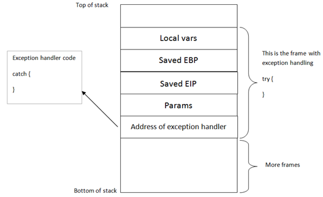

An exception handler is a piece of code that is written inside an application, with the purpose of dealing with the fact that the application throws an execption. A typical exception handler looks like this :
try
{
//run stuff. If an exception occurs, go to code
}
catch
{
// run stuff when exception occurs
}
A quick look on the stack on how the try & catch blocks are related to each other and placed on the stack :

(Note : "Address of exception handler" is just one part of a SEH record – the image above is an abstract representation, merely showing the various components)
Windows has a default SEH (Structured Exception Handler) which will catch exceptions. If Windows catches an exception, you’ll see a “xxx has encountered a problem and needs to close” popup. This is often the result of the default handler kicking in. It is obvious that, in order to write stable software, one should try to use development language specific exception handlers, and only rely on the windows default SEH as a last resort. When using language EH’s, the necessary links and calls to the exception handling code are generate in accordance with the underlying OS. (and when no exception handlers are used, or when the available exception handlers cannot process the exception, the Windows SEH will be used. (UnhandledExceptionFilter)). So in the event an error or illegal instruction occurs, the application will get a chance to catch the exception and do something with it. If no exception handler is defined in the application, the OS takes over, catches the exception, shows the popup (asking you to Send Error Report to MS).
In order for the application to be able to go to the catch code, the pointer to the exception handler code is saved on the stack (for each code block). Each code block has its own stack frame, and the pointer to the exception handler is part of this stack frame. In other words : Each function/procedure gets a stack frame. If an exception handler is implement in this function/procedure, the exception handler gets its own stack frame. Information about the frame-based exception handler is stored in an exception_registration structure on the stack.
This structure ( also called a SEH record) is 8 bytes and has 2 (4 byte) elements :
- a pointer to the next exception_registration structure (in essence, to the next SEH record, in case the current handler is unable the handle the exception)
- a pointer, the address of the actual code of the exception handler. (SE Handler)
Simple stack view on the SEH chain components :

At the top of the main data block (the data block of the application’s “main” function, or TEB (Thread Environment Block) / TIB (Thread Information Block)), a pointer to the top of the SEH chain is placed. This SEH chain is often called the FS:[0] chain as well.
So, on Intel machines, when looking at the disassembled SEH code, you will see an instruction to move DWORD ptr from FS:[0]. This ensures that the exception handler is set up for the thread and will be able to catch errors when they occur. The opcode for this instruction is 64A100000000. If you cannot find this opcode, the application/thread may not have exception handling at all.
Alternatively, you can use a OllyDBG plugin called OllyGraph to create a Function Flowchart.
The bottom of the SEH chain is indicated by FFFFFFFF. This will trigger an improper termination of the program (and the OS handler will kick in)
Quick example : compile the following source code (sehtest.exe) and open the executable in windbg. Do NOT start the application yet, leave it in a paused state :
#include
#include<string.h>
#include
int ExceptionHandler(void);
int main(int argc,char *argv[]){
char temp[512];
printf("Application launched");
__try {
strcpy(temp,argv[1]);
} __except ( ExceptionHandler() ){
}
return 0;
}
int ExceptionHandler(void){
printf("Exception");
return 0;
}
look at the loaded modules
Executable search path is:
ModLoad: 00400000 0040c000 c:\sploits\seh\lcc\sehtest.exe
ModLoad: 7c900000 7c9b2000 ntdll.dll
ModLoad: 7c800000 7c8f6000 C:\WINDOWS\system32\kernel32.dll
ModLoad: 7e410000 7e4a1000 C:\WINDOWS\system32\USER32.DLL
ModLoad: 77f10000 77f59000 C:\WINDOWS\system32\GDI32.dll
ModLoad: 73d90000 73db7000 C:\WINDOWS\system32\CRTDLL.DLL
The application sits between 00400000 and 0040c000
Search this area for the opcode :
0:000> s 00400000 l 0040c000 64 A1
00401225 64 a1 00 00 00 00 55 89-e5 6a ff 68 1c a0 40 00 d.....U..j.h..@.
0040133f 64 a1 00 00 00 00 50 64-89 25 00 00 00 00 81 ec d.....Pd.%......
This is proof that an exception handler is registered.
Dump the TEB :
0:000> d fs:[0]
003b:00000000 0c fd 12 00 00 00 13 00-00 e0 12 00 00 00 00 00 ................
003b:00000010 00 1e 00 00 00 00 00 00-00 f0 fd 7f 00 00 00 00 ................
003b:00000020 84 0d 00 00 54 0c 00 00-00 00 00 00 00 00 00 00 ....T...........
003b:00000030 00 d0 fd 7f 00 00 00 00-00 00 00 00 00 00 00 00 ................
003b:00000040 00 00 00 00 00 00 00 00-00 00 00 00 00 00 00 00 ................
003b:00000050 00 00 00 00 00 00 00 00-00 00 00 00 00 00 00 00 ................
003b:00000060 00 00 00 00 00 00 00 00-00 00 00 00 00 00 00 00 ................
003b:00000070 00 00 00 00 00 00 00 00-00 00 00 00 00 00 00 00 ................
0:000> !exchain
0012fd0c: ntdll!strchr+113 (7c90e920)
The pointer points to 0x0012fd0c (begin of SEH chain). When looking at that area, we see :
0:000> d 0012fd0c
0012fd0c ff ff ff ff 20 e9 90 7c-30 b0 91 7c 01 00 00 00 .... ..|0..|....
0012fd1c 00 00 00 00 57 e4 90 7c-30 fd 12 00 00 00 90 7c ....W..|0......|
0012fd2c 00 00 00 00 17 00 01 00-00 00 00 00 00 00 00 00 ................
0012fd3c 00 00 00 00 00 00 00 00-00 00 00 00 00 00 00 00 ................
0012fd4c 08 30 be 81 92 24 3e f8-18 30 be 81 18 aa 3c 82 .0...$>..0....<.
0012fd5c 90 2f 20 82 01 00 00 00-00 00 00 00 00 00 00 00 ./ .............
0012fd6c 00 00 00 00 00 00 00 00-00 00 00 00 00 00 00 00 ................
0012fd7c 01 00 00 f4 00 00 00 00-00 00 00 00 00 00 00 00 ................
ff ff ff ff indicates the end of the SEH chain. That’s normal, because the application is not started yet. (Windbg is still paused)
If you have the Ollydbg plugin Ollygraph installed, you could open the executable in ollydbg and create the graph, which should indicate if an exception handler is installed or not :

When we run the application (F5 or ‘g’), we see this :
0:000> d fs:[0]
*** ERROR: Symbol file could not be found. Defaulted to export symbols for ...
003b:00000000 40 ff 12 00 00 00 13 00-00 d0 12 00 00 00 00 00 @...............
003b:00000010 00 1e 00 00 00 00 00 00-00 f0 fd 7f 00 00 00 00 ................
003b:00000020 84 0d 00 00 54 0c 00 00-00 00 00 00 00 00 00 00 ....T...........
003b:00000030 00 d0 fd 7f 00 00 00 00-00 00 00 00 00 00 00 00 ................
003b:00000040 a0 06 85 e2 00 00 00 00-00 00 00 00 00 00 00 00 ................
003b:00000050 00 00 00 00 00 00 00 00-00 00 00 00 00 00 00 00 ................
003b:00000060 00 00 00 00 00 00 00 00-00 00 00 00 00 00 00 00 ................
003b:00000070 00 00 00 00 00 00 00 00-00 00 00 00 00 00 00 00 ................
0:000> d 0012ff40
0012ff40 b0 ff 12 00 d8 9a 83 7c-e8 ca 81 7c 00 00 00 00 .......|...|....
0012ff50 64 ff 12 00 26 cb 81 7c-00 00 00 00 b0 f3 e8 77 d...&..|.......w
0012ff60 ff ff ff ff c0 ff 12 00-28 20 d9 73 00 00 00 00 ........( .s....
0012ff70 4a f7 63 01 00 d0 fd 7f-6d 1f d9 73 00 00 00 00 J.c.....m..s....
0012ff80 00 00 00 00 00 00 00 00-ca 12 40 00 00 00 00 00 ..........@.....
0012ff90 00 00 00 00 f2 f6 63 01-4a f7 63 01 00 d0 fd 7f ......c.J.c.....
0012ffa0 06 00 00 00 04 2d 4c f4-94 ff 12 00 ab 1c 58 80 .....-L.......X.
0012ffb0 e0 ff 12 00 9a 10 40 00-1c a0 40 00 00 00 00 00 ......@...@.....
The TEB for the main function is now set up. The SEH chain for the main function points at 0x0012ff40, where the exception handler is listed and will point to the exception handler function (0x0012ffb0)
In OllyDbg, you can see the seh chain more easily :

(There is a similar view in Immunity Debugger – just click "View" and select "SEH Chain")
Stack :

Here we can see a pointer to our Exception Handler function ExceptionHandler() (0x0040109A)
Anyways, as you can see in the explanation above the example, and in the last screenshot, exception handlers are connected/linked to each other. They form a linked list chain on the stack, and sit relatively close to the bottom of the stack. (SEH chain). When an exception occurs, Windows ntdll.dll kicks in, retrieves the head of the SEH chain (sits at the top of TEB/TIB remember), walks through the list and tries to find the suitable handler. If no handler is found the default Win32 handler will be used (at the bottom of the stack, the one after FFFFFFFF).

We see the first SE Handler record at 0012FFF40. The next SEH address points to the next SEH record (0012FFB0). The current handler points at 7C839AD8. It looks like this is some kind of OS handler (the pointers points into an OS module)
Then, the second SEH record entry in the chain (at 0012FFB0) has the following values: next SEH points to 0012FFE0. The handler points at 0040109A. This address is part of the executable (within application memory range), so it looks like this is an application handler.
Finally, the last SEH record in the chain (at 0012FFE0) has FFFFFFFF in nseh. This means that this is the last entry in the chain. The handler points at 7C839AD8, which is an OS handler again.
So, putting all pieces together, the entire SEH chain looks like this :

You can read more about SEH in Matt Pietrek’s excellent article from 1997 : http://www.microsoft.com/msj/0197/exception/exception.aspx